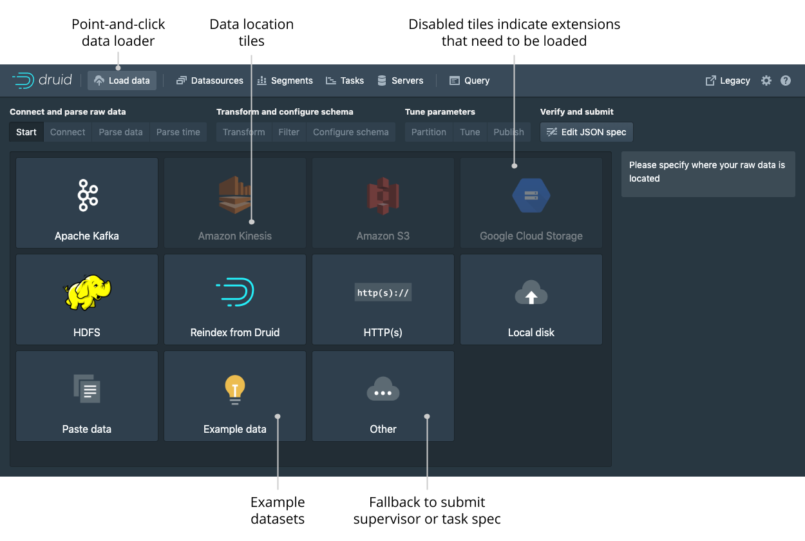

Druid include a console for managing datasources, segments, tasks, data processes (Historicals and MiddleManagers), and coordinator dynamic configuration. Users can also run SQL and native Druid queries in the console.
The Druid Console is hosted by the Router process.
The following cluster settings must be enabled, as they are by default:
- the Router's management proxy must be enabled.
- the Broker processes in the cluster must have Druid SQL enabled.
The Druid console can be accessed at:
http://<ROUTER_IP>:<ROUTER_PORT>
It is important to note that any Druid console user will have, effectively, the same file permissions as the user under which Druid runs. One way these permissions are surfaced is in the file browser dialog. The dialog will show console users the files that the underlying user has permissions to. In general, avoid running Druid as root user. Consider creating a dedicated user account for running Druid.
Below is a description of the high-level features and functionality of the Druid Console
1.1. Home
The home view provides a high level overview of the cluster. Each card is clickable and links to the appropriate view. The legacy menu allows you to go to the legacy coordinator and overlord consoles should you need them.
1.2. Data loader
The data loader view allows you to load data by building an ingestion spec with a step-by-step wizard.

After selecting the location of your data just follow the series for steps that will show you incremental previews of the data as it will be ingested.
After filling in the required details on every step you can navigate to the next step by clicking the Next button.
You can also freely navigate between the steps from the top navigation.
Navigating with the top navigation will leave the underlying spec unmodified while clicking the Next button will attempt to fill in the subsequent steps with appropriate defaults.
1.3. Datasources
The datasources view shows all the currently enabled datasources.
From this view you can see the sizes and availability of the different datasources.
You can edit the retention rules, configure automatic compaction, and drop data.
Like any view that is powered by a DruidSQL query you can click View SQL query for table from the ... menu to run the underlying SQL query directly.
You can view and edit retention rules to determine the general availability of a datasource.
1.4. Segments
The segment view shows all the segments in the cluster. Each segment can be has a detail view that provides more information. The Segment ID is also conveniently broken down into Datasource, Start, End, Version, and Partition columns for ease of filtering and sorting.
1.5. Tasks and supervisors
From this view you can check the status of existing supervisors as well as suspend, resume, and reset them.
The tasks table allows you see the currently running and recently completed tasks.
To make managing a lot of tasks more accessible, you can group the tasks by their Type, Datasource, or Status to make navigation easier.
Click on the magnifying glass for any supervisor to see detailed reports of its progress.
Click on the magnifying glass for any task to see more detail about it.
1.6. Servers
The servers tab lets you see the current status of the nodes making up your cluster. You can group the nodes by type or by tier to get meaningful summary statistics.
1.7. Query
The query view lets you issue DruidSQL queries and display the results as a table. The view will attempt to infer your query and let you modify via contextual actions such as adding filters and changing the sort order when possible.

The query view can also issue queries in Druid's native query format, which is JSON over HTTP.
To send a native Druid query, you must start your query with { and format it as JSON.
1.8. Lookups
You can create and edit query time lookups via the lookup view.